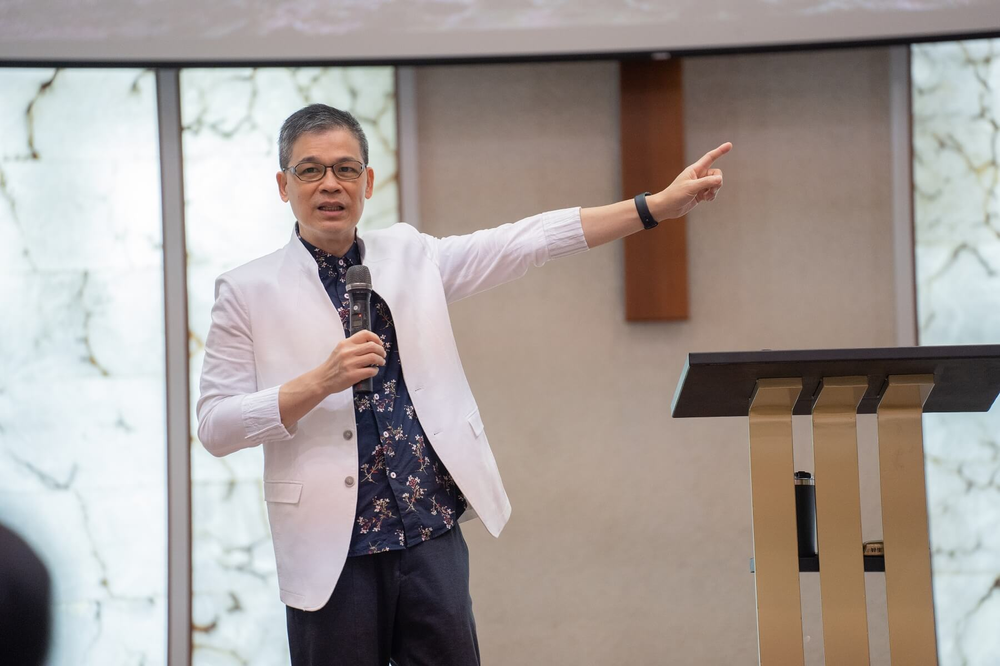
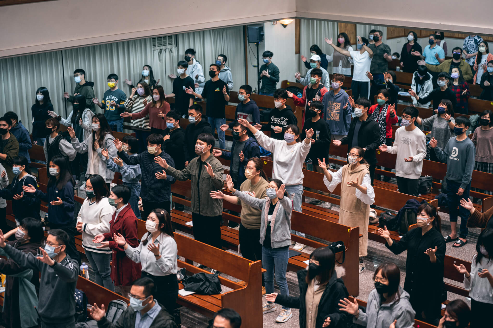

每月復興特會
在2022年寒假的《Meta-Victor維克特的傳說》營會過後，和平教會便開始舉辦每月一至兩次的《Meta-Victor復興特會》，以特會的規格來經營聚會，鍛鍊服事的同工，興起國度人才，並提升大家建造教會的實力！
以「Meta-Victor」來命名，亦是期盼弟兄姊妹的屬靈眼界被擴張，戴上屬靈的VR眼鏡，改變屬靈的視角，提升回應的層次。
而今年，有感於世界各地天災頻仍：極端氣候、洪災、雪災、地震帶來許多嚴重災情；世界情勢十分動盪：烏俄戰爭開打、台海局勢經歷前所未有的危機、南北韓關係緊張…；無預警的事件一夕間奪走許多人的生命：印尼足球暴動、梨泰院踩踏事件…等等。

種種跡象如同警訊般響起，正在告訴教會，我們必須加速教會的建造，加速贏得教會的未來！
「若是教會沒有未來，未來就沒有教會！」
兆昕牧師
為此，今年9月開始，教會以《未來教會復興特會》來經營每月的特會，兆昕牧師持續在當中傳講時代性、啟示性、關鍵性的信息，教導弟兄姊妹以上帝的視角來看待「時間」，明白建造教會刻不容緩，我們需抓住Kairos、把握現今的機會，起來建造主的教會！

此外，由於今年為和平教會設教七十週年，教會更舉辦了：
-PPC 70建造教會研習會／復興特會-
- 萬國尼希米特別聚會-
分別邀請到Greg Miller牧師、新生命小組教會的主任牧師——顧其芸牧師、以及大都會國際兒童事工創辦人——Bill Wilson牧師前來擔任講員，每一篇信息都在對和平教會說話！
兆昕牧師也在回應時告訴教會，我們一定要常常思想：自己為什麼被神拯救？我們為什麼身在台灣？台灣又為什麼如此蒙神的保守，在疫情、天災中被保護？神呼召我們建造使徒性的和平教會，我們一定要抓住關鍵時刻，奉主差遣，成為主復活的見證人，直到地極！
回上一節
下一節